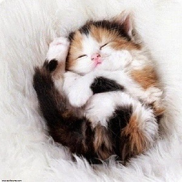

Dans cette section, nous nous demanderons si le chat est vraiment mignon ?
Nous pouvons donc légitimement nous demander si les chats n'usent pas de leur charme dans le simple but de faire oublier leurs défauts...
D'autres animaux peuplant les océans recèlent de charmes méconnus